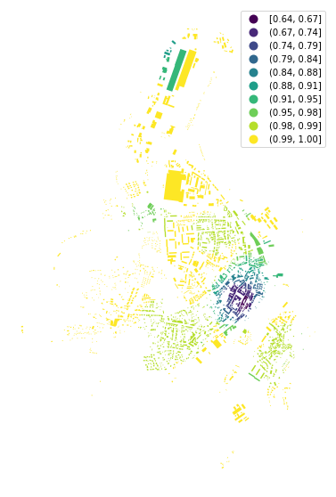
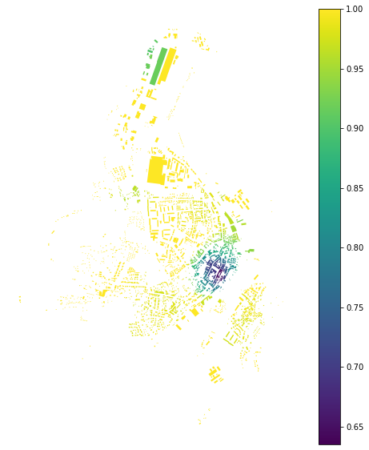
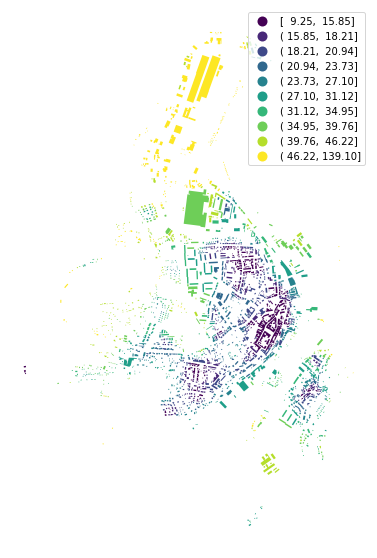

Note
Some functions are using spatial weights for two different purposes. Therefore two matrices have to be passed. We will illustrate this case measuring building adjacency and mean interbuilding distance.
[1]:
import momepy import geopandas as gpd import matplotlib.pyplot as plt
We will again use osmnx to get the data for our example and after preprocessing of building layer will generate tessellation.
osmnx
[2]:
import osmnx as ox gdf = ox.geometries.geometries_from_place('Kahla, Germany', tags={'building':True}) gdf_projected = ox.projection.project_gdf(gdf) buildings = momepy.preprocess(gdf_projected, size=30, compactness=True, islands=True, verbose=False) buildings['uID'] = momepy.unique_id(buildings) limit = momepy.buffered_limit(buildings) tessellation = momepy.Tessellation(buildings, unique_id='uID', limit=limit, verbose=False).tessellation
Building adjacency is using spatial_weights_higher to denote the area within which the calculation occurs (required) and spatial_weights to denote adjacency of buildings (optional, the function can do it for us). We can use distance band of 200 meters to define spatial_weights_higher.
spatial_weights_higher
spatial_weights
[3]:
import libpysal dist200 = libpysal.weights.DistanceBand.from_dataframe(buildings, 200, ids='uID')
[4]:
adjac = momepy.BuildingAdjacency( buildings, spatial_weights_higher=dist200, unique_id='uID') buildings['adjacency'] = adjac.series
Calculating adjacency: 100%|██████████| 2005/2005 [00:00<00:00, 98379.52it/s]Calculating spatial weights... Spatial weights ready...
[5]:
f, ax = plt.subplots(figsize=(10, 10)) buildings.plot(ax=ax, column='adjacency', legend=True, cmap='viridis', scheme='naturalbreaks', k=10) ax.set_axis_off() plt.show()

If we want to specify or reuse spatial_weights, we can generate them as Queen contiguity weights. Using libpysal or momepy (momepy will use the same libpysal method, but you don’t need to import libpysal directly):
libpysal
momepy
[6]:
queen = libpysal.weights.Queen.from_dataframe(buildings, silence_warnings=True, ids='uID') queen = momepy.sw_high(k=1, gdf=buildings, ids='uID', contiguity='queen')
[7]:
buildings['adj2'] = momepy.BuildingAdjacency(buildings, spatial_weights_higher=dist200, unique_id='uID', spatial_weights=queen).series
Calculating adjacency: 100%|██████████| 2005/2005 [00:00<00:00, 86549.47it/s]
[8]:
f, ax = plt.subplots(figsize=(10, 10)) buildings.plot(ax=ax, column='adj2', legend=True, cmap='viridis') ax.set_axis_off() plt.show()

Mean interbuilding distance is similar to neighbour_distance, but it is calculated within vicinity defined in spatial_weights_higher, while spatial_weights captures immediate neighbours.
neighbour_distance
[9]:
sw1 = momepy.sw_high(k=1, gdf=tessellation, ids='uID') sw3 = momepy.sw_high(k=3, gdf=tessellation, ids='uID')
[10]:
interblg_distance = momepy.MeanInterbuildingDistance( buildings, sw1, 'uID', spatial_weights_higher=sw3) buildings['mean_ib_dist'] = interblg_distance.series
7%|▋ | 140/2005 [00:00<00:02, 717.84it/s]Computing mean interbuilding distances... 100%|██████████| 2005/2005 [00:02<00:00, 782.58it/s]
spatial_weights_higher is optional and can be derived from spatial_weights as weights of higher order defined in order.
order
[11]:
buildings['mean_ib_dist'] = momepy.MeanInterbuildingDistance( buildings, sw1, 'uID', order=3).series
Generating weights matrix (Queen) of 3 topological steps... 4%|▍ | 85/2005 [00:00<00:02, 843.97it/s]Computing mean interbuilding distances... 100%|██████████| 2005/2005 [00:02<00:00, 820.91it/s]
[12]:
f, ax = plt.subplots(figsize=(10, 10)) buildings.plot(ax=ax, column='mean_ib_dist', scheme='quantiles', k=10, legend=True, cmap='viridis') ax.set_axis_off() plt.show()
